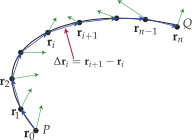
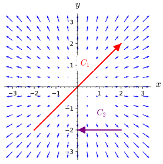
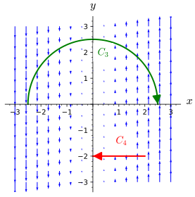
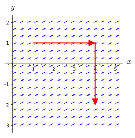
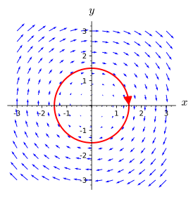

What is an oriented curve and how can we represent one algebraically?
What is the meaning of the line integral of a vector-valued function along a curve and how can we estimate if its value is positive, negative, or zero?
What are important properties of the line integral of a vector-valued functions along a curve?
As we discussed in Section 12.1, vector fields are often useful as representations of forces such as gravity or electromagnetism, as well as representing the velocity of movement for things like wind or flowing water. We learned in Section 9.3 that the dot product of a force vector and a displacement vector tells us how much work the force did on the object as it moved from the tail of its displacement vector to the tip. However, this calculation assumes that the force is constant in the region of movement and that the object moves in a straight line along the displacement vector. The situation is more complicated than a dot product calculation when an object's movement is not in a straight line and when the force is not uniform throughout the area in which the object moves.
Preview Activity12.2.1.
Recall from Section 9.3 that the work done by a force \(\vF\) on an object that moves with displacement vector \(\vv\) is \(\vF\cdot \vv\text{.}\) In this Preview Activity, we consider the work done by wind on a helicopter at various stages of its journey.
(a)
Our intrepid pilot flies for some time and finds that they are 30 km from where they started at a heading of 20 ° degrees east of due north. During this portion of the trip, the wind is exerting a force on the helicopter of 100 in the due east direction. Find the work the wind has done on the helicopter during the flight.
(b)
Our pilot sees a storm ahead and changes thier direction. Some time later, the pilot determines that they are 25 m due north of where they previously checked thier position. The wind is still exerting a force on the helicopter of 100 in the due east direction. Find the work done by the wind on the helicopter during the second part of the flight.
(c)
Find the helicopters's displacement from its original position after its two parts of its flight and use that to find the work done by the wind on the helicopter during the first two parts of flight.
(d)
How does your answer to the previous part connect to the answers to the first two parts?
(e)
In order to get further away from the storm, the pilot turns and flies 45 ° west of due north for 50 km. The storm the pilot was avoiding has caused the wind to change as well. For this portion of the flight, the wind is exerting a force on the helicopter of 125 in the south direction. Find the work done by the wind on the helicopter during this part of the flight.
(f)
Explain why you cannot take the total displacement of the three parts of the helicopter flight and calculate the total work done by the wind on the helicopter.
Subsection12.2.1Orientations of Curves
Given our motivation for calculating the work that a force field does on an object as it moves through the field, it is natural to concern ourselves with how the object moves. In particular, in many circumstances it will be different if an object moves from the point \((0,1)\) to the point \((4,3)\) by first going up the \(y\)-axis to \((0,3)\) and then moving horizontally to \((4,3)\) than if the object moves along the line segment from \((0,1)\) directly to \((4,3)\text{.}\) Similarly, given a fixed force field, we would expect the work done to be different (in fact, opposite) if the object moves from \((4,3)\) to \((0,1)\) directly along a line segment. We say that a curve in \(\R^2\) or \(\R^3\) is oriented if we have specified the direction of travel along the curve. When a curve is given parametrically (including as a vector-valued function), our convention will be that the orientation follows from the smallest allowable value of the parameter to the largest.
Activity12.2.2.
For each curve below, find a parametrization of the curve. Ensure that each curve's orientation matches the one specified.
(a)
The line segment in \(\R^3\) from \((0,1,-2)\) to \((3,-1,2)\text{.}\)
(b)
The line segment in \(\R^3\) from \((3,-1,2)\) to \((0,1,-2)\text{.}\)
(c)
The circle of radius \(3\) (in \(\R^2\)) centered at the origin, beginning at the point \((0,-3)\) and proceeding clockwise around the circle.
(d)
In \(\R^2\text{,}\) the portion of the parabola \(y^2 = x\) from the point \((4,2)\) to the point \((1,-1)\text{.}\)
Notice that there are, in general, many ways to parametrize an oriented curve. With line segments, it is common to have the parameter range from \(0\) to \(1\text{,}\) although there are sometimes good reasons to choose another method. For circles and ellipses, you may find it useful to interchange the placement of \(\cos(t)\) and \(\sin(t)\) to change the orientation, but then careful attention will need to be paid to the start and end points. The interactive graphing applet below allows you to plot parametric curves. Click the “Animate” button to trace out the curve from your lower value of \(t\) to your upper value of \(t\text{.}\) (Type enter/return on your keyboard to update the graph after editing a text box.) For curves in \(\R^2\text{,}\) check the “Restrict view to 2D” for ease of viewing.
Figure12.2.1.A CalcPlot3D applet to explore oriented curves
Subsection12.2.2Line Integrals
Just as when we differentiated a vector-valued function \(\vr(t)\) to find a tangent vector, we begin by dividing a curve \(C\) oriented from a point \(P\) to a point \(Q\) into \(n\) small, straight pieces. Each of these pieces is in an area where the vector field \(\vF\) is nearly constant, provided we use enough pieces. In Figure 12.2.2, we show this situation. Each \(\vr_i\) is the tip of a vector that traces out the curve, which makes the vectors \(\Delta\vr_i = \vr_{i+1}-\vr_i\) (shown in blue) approximate the curve \(C\text{.}\) The green vectors are the vectors in the vector field \(\vF\) at each of the designated points along the curve.

Figure12.2.2.A curve \(C\) oriented from the point \(P\) to the point \(Q\text{.}\) The tips of the vectors \(\vr_i\) that trace out the curve are shown as points. The blue vectors are the \(\Delta\vr_i\text{,}\) while the green vectors are the vectors associated to each of the points by a vector field \(\vF\text{.}\)
If we are trying to determine how much a wind current helps or hinders an aircraft flying along a path determined by the curve, then calculating the dot product \(\vF(\vr_i)\cdot \Delta\vr_i\) makes sense for the local amount of help or hindrance. This is because if the vector \(\vr_i\) along the curve and the force field vector \(\vF(\vr_i)\) point in similar directions, the dot product will be positive.  1  On the other hand, if the angle between them is obtuse, the dot product will be negative and we also would note that the force field is hindering the aircraft's progress. Taking the sum over \(i=0,\dots,n-1\text{,}\) we have a Riemann sum that approximates the work done by the vector field on the aircraft as it flies along \(C\text{:}\)
The limit in Definition 12.2.3 exists provided that \(\vF\) is a continuous vector field, by which we mean that each component function of \(\vF\) is continuous as a function of \(2\) or \(3\) variables, and that \(C\) is a piecewise smooth curved traced out from its initial point to its terminal point without retracing any portion of the curve.
Because the dot products in the definition of the line integral \(\int_C\vF\cdot d\vr\) can each be viewed as the work done by \(\vF\) as an object moves along the (very small) vector \(\Delta\vr_i\text{,}\) the line integral gives the total work done by the vector field on an object that moves along \(C\) (in the direction of its orientation).
Activity12.2.3.
Shown in Figure 12.2.4 are two vector fields, \(\vF\) and \(\vG\) and four oriented curves, as labeled in the plots. For each of the line integrals below, determine if its value should be positive, negative, or zero. Do this by thinking about if the vector field is helping or hindering a particle moving along the oriented curve, rather than by doing calculations.
(a)\(\vF\)
(b)\(\vG\)
Figure12.2.4.Vector fields and oriented curves
(a)
\(\displaystyle\int_{C_1}\vF\cdot d\vr\)
(b)
\(\displaystyle\int_{C_2}\vF\cdot d\vr\)
(c)
\(\displaystyle\int_{C_3}\vG\cdot d\vr\)
(d)
\(\displaystyle\int_{C_4}\vG\cdot d\vr\)
The next several sections will be devoted to determining ways to calculate line integrals. As with the limits in the definition of every other type of integral we've studied so far, the limit in the definition of the line integral is is cumbersome to work with in most cases. However, in the case where the oriented curve \(C\) is composed of horizontal and vertical line segments, we can make a rather quick reduction to a single-variable integral, as the following example shows.
Example12.2.5.
Consider the constant vector field \(\vF(x,y) = \langle 2,1\rangle\text{.}\) Let \(C\) be the curve that follows the horizontal line segment from \((1,1)\) to \((4,1)\) and then continues down the vertical line segment to \((4,-2)\text{.}\)Figure 12.2.6 shows \(\vF\) and \(C\text{,}\) including the orientation. Calculate \(\displaystyle\int_C\vF\cdot d\vr\)

Figure12.2.6.An oriented curve from \((1,1)\) to \((4,-2)\) in a vector field \(\vF\text{.}\)
To calculate \(\int_C\vF\cdot d\vr\text{,}\) we start by working with the horizontal line segment. Along that part of \(C\text{,}\) notice that \(d\vr\approx \Delta\vr = \Delta
x\vi\text{.}\) Thus, the Riemann sum that calculates the line integral along this portion of \(C\) consists of terms of the form \(\langle 2,1\rangle\cdot (\Delta x \vi) = 2\Delta
x\text{.}\) Along this part of \(C\text{,}\)\(x\) ranges from \(1\) to \(4\text{,}\) and thus we can turn the Riemann sum here into the definite integral \(\int_1^4 2\, dx = 6\text{.}\) Since the vectors are generally pointing in a direction that agrees with the orientation of \(C\text{,}\) we are not surprised to have a positive value here.
Now we turn our attention to the vertical portion of \(C\text{.}\) Here \(d\vr \approx \Delta\vr = \Delta y\vj\text{,}\) which means that \(\vF\cdot d\vr\approx 1\Delta y\text{.}\) Hence, our Riemann sum can be calculated by the definite integral \(\int_1^{-2} 1\, dy = -3\text{.}\) Notice that the limits of integration here were set up to match the orientation of \(C\text{.}\) Also, the negative value should not be unexpected, since \(C\) is oriented in a direction for which the vectors of \(\vF\) point in a direction that would hinder motion along \(C\text{.}\)
Combining these two calculations, we find that \(\int_C
\vF\cdot d\vr = 6 - 3 = 3\text{.}\)
Subsection12.2.3Properties of Line Integrals
In Example 12.2.5, we implicitly made use of the idea that if \(C\) can be broken up into two curves \(C_1\) and \(C_2\) such that the terminal point of \(C_1\) is the initial point of \(C_2\text{,}\) then the line integral of \(\vF\) along \(C\) is the sum of the line integrals of \(\vF\) along \(C_1\) and along \(C_2\text{.}\) Recalling the property for definite integrals that tells us
the ability to work with line integrals in this way is probably not surprising.
Before stating some useful properties of line integrals, we will establish some convenient notation. If \(C_1\) and \(C_2\) are oriented curves, with \(C_1\) from a point \(P\) to a point \(Q\) and \(C_2\) from \(Q\) to a point \(R\text{,}\) we denote by \(C_1+C_2\) the oriented curve from \(P\) to \(R\) that follows \(C_1\) to \(Q\) and then continues along \(C_2\) to \(R\text{.}\) Also, if \(C\) is an oriented curve, \(-C\) denotes the same curve but with the opposite orientation. The list below summarizes some other properties of line integrals, each of which has a familiar analogue amongst the properties of definite integrals.
Properties of Line Integrals.
For a constant scalar \(k\text{,}\) vector fields \(\vF\) and \(\vG\text{,}\) and oriented curves \(C\text{,}\)\(C_1\text{,}\) and \(C_2\text{,}\) the following properties hold:
If an oriented curve \(C\) ends at the same point where it started, we say that \(C\) is closed. The line integral of a vector field \(\vF\) along a closed curve \(C\) is called the circulation of \(\vF\) around \(C\text{.}\) To emphasize the fact that \(C\) is closed, we sometimes write \(\oint_C \vF\cdot d\vr\) for \(\int_C \vF\cdot d\vr\text{.}\) Circulation serves as a measure of a vector field's tendency to rotate in a manner consistent with the orientation of the curve.
Activity12.2.5.
Determine if the circulation of the vector field around each of the closed curves shown in Figure 12.2.8 is positive, negative, or zero.

Figure12.2.8.Vector fields and closed curves
Subsection12.2.5Summary
An oriented curve is a vector-valued function of one variable \(\vr(t)\) where we interpret the initial and terminal values of the domain of \(\vr\) as giving an orientation to the curve. A curve that ends at the same point where it started is said to be closed.
A line integral measures of a vector field along an oriented curve measures the extent to which the vector field points in a direction consistent with the orientation of the curve.
Line integrals have many properties that are analogous to those of definite integrals of functions of a single variable. The line integral of a vector field along a closed curve is called the circulation of the vector field along the curve.
We are abusing notation here a tiny bit, since technically the domain of \(\vF\) is points in \(\R^2\) or \(\R^3\text{,}\) and \(\vr_i\) is a vector. By \(\vF(\vr)\text{,}\) we mean \(\vF(r_1,r_2)\text{,}\) where \(\vr= \langle r_1,r_2\rangle\text{.}\)
![A vector field in the first quadrant with \(x,y\leq 5\text{.}\) Vectors are parallel to the \(y\)-axis and point in the negative \(y\)-direction. Vectors get longer as distance from the \(y\)-axis increases. There are six labeled oriented curves. The curve \(C_1\) is the line segment from \((3,3)\) to \((4,3)\text{.}\) The curve \(C_2\) is the line segment from \((4,3)\) to \((4,5)\text{.}\) The curve \(C_3\) is the line segment from \((4,5)\) to \((3,5)\text{.}\) The curve \(C_4\) is the line segment from \((3,5)\) to \((3,3)\text{.}\) The curve \(C_5\) is the lower half of the circle of radius \(1\) centered at \((3,2)\) oriented counterclockwise. The curve \(C_6\) is the line segment from \((1,1)\) to \((1,5)\text{.}\)](external//fig_12_2_field_practice.svg)
![A vector field with all vectors parallel to the \(y\)-axis. Vectors get longer as distance from the \(y\)-axis increases. Vectors with \(x>0\) point in the positive \(y\)-direction, while vectors with \(x\lt 0\) point in the negative \(y\)-direction. Also shown are two rectangles with sides parallel to the axes. One rectangle is oriented counterclockwise; its lower-left corner is at \((-2.25,-1.5)\) and its upper-right corner is at \((1,2.5)\text{.}\) The other rectangle is oriented clockwise; its lower-left corner is at \((-1.75,-3.2)\) and its upper-right corner is at \((1.5,-2.1)\text{.}\)](external//fig_12_2_circ_box.svg)